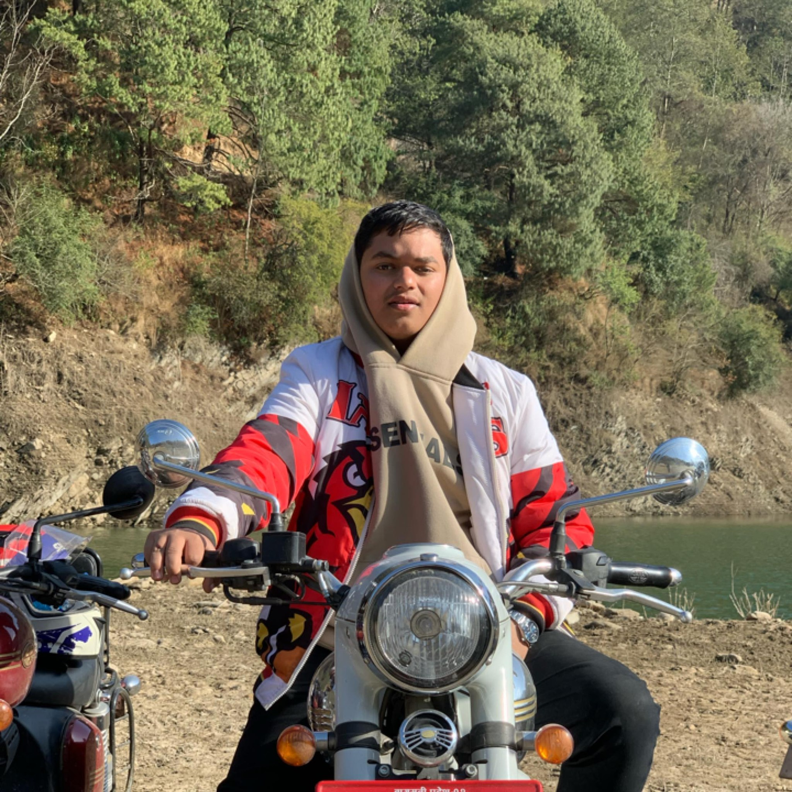

Far Cry 3 is a 2012 first-person shooter game developed by Ubisoft Montreal and published by Ubisoft. It is the third main installment in the Far Cry series after Far Cry 2. The game takes place on the fictional Rook Islands, a tropical archipelago which can be freely explored by players. Gameplay focuses on combat and exploration. Players can use a variety of weapons to defeat human enemies and hostile wildlife, and the game features elements found in role-playing games such as skill trees and experience. After a vacation goes awry, protagonist Jason Brody must save his friends, who have been kidnapped by pirates, and escape from the island and its unhinged inhabitants. Ubisoft Montreal collaborated with Ubisoft's global development team, including Massive Entertainment, Ubisoft Shanghai, Ubisoft Bucharest, Ubisoft Reflections and Red Storm Entertainment. The game's development was partially restarted in 2010 after the departure of several key creative staff. The team evaluated the feedback for Far Cry 2 and identified areas that needed to be improved or removed. The team spent considerable time designing the island, which they described as the "second most important character" in the game. Inspirations were taken from films and TV shows such as Apocalypse Now and Lost, as well as video games The Elder Scrolls V: Skyrim and Red Dead Redemption. Michael Mando was hired to portray Vaas Montenegro, an antagonist the team compared to Darth Vader. The game was announced in June 2011 and Ubisoft promoted the game with various companion apps, webseries and crossover. It was released for Microsoft Windows, PlayStation 3 and Xbox 360 in November 2012. The game received critical acclaim upon release, with praise directed at its characters (particularly Vaas), world design, visuals, progression, and gameplay, though the game's multiplayer modes received criticism. Despite weak pre-order sales, nearly 10 million copies of the game were sold. It was nominated for multiple year-end accolades including Game of the Year and Best Shooter awards by several gaming publications. It has also been cited as one of the greatest video games ever made. Ubisoft supported the game with downloadable content and released Far Cry 3: Blood Dragon, the game's standalone expansion, in 2013. A successor, Far Cry 4 was released in November 2014. The game was re-released for PlayStation 4 and Xbox One in June 2018.
